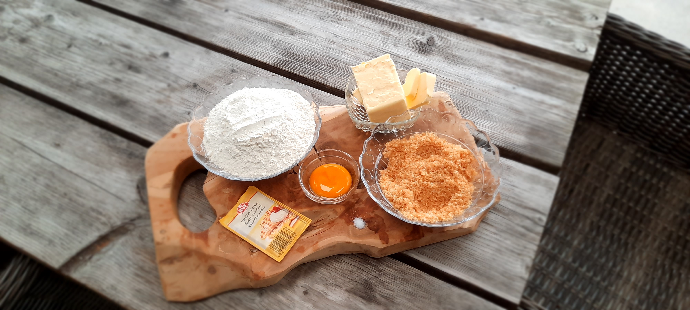

Koekjes bakken!
- Mix de boter, vanillesuiker en suiker tot deze volledig gemengd zijn met elkaar.
- Voeg daarna de eidooier toe en mix deze er doorheen.
- Voeg nu de bloem toe en kneed dit tot een grote bal.
- Wikkel dit in folie en laat het een uur rusten in de koelkast.
- Verwarm nadat je het deeg uit de koelkast hebt gedaan de over voor op 180 graden Celsius.
- Nu kun je het deeg in kleine balletjes rollen en plat drukken, of je maakt het deeg plat met een roller en maakt er vormpjes van.
- Leg de koekjes op een bakplaat met bakpapier er op en doe deze 16 minuutjes in de oven.
- Laat de koekjes nog even afkoelen nadat ze uit de oven komen, ze kunnen namelijk nog een beetje zacht zijn.
Versieren
Ik decoreer mijn zandkoekjes graag, omdat ik van vrolijke koekjes hou met een beetje kleur. Je zou bijvoorbeeld met wat glazuur of boter crème een leuk figuur op de koekjes kunnen maken. Ik heb zelf wat glazuur met spikkels er op gedaan. Het is simpel, maar het is wel heel erg leuk!